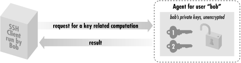
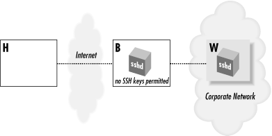
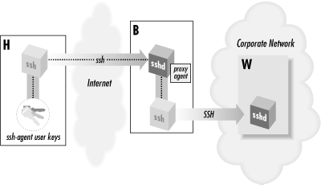
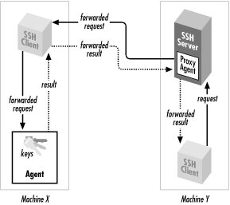

|  |
6.3. SSH Agents
An SSH agent is a program that caches private keys and responds to authentication-related queries from SSH clients. [Section 2.5, "The SSH Agent"] They are terrific labor-saving devices, handling all key-related operations and eliminating the need to retype your passphrase. The programs related to agents are ssh-agent and ssh-add. ssh-agent runs an agent, and ssh-add inserts and removes keys from the agent's key cache. A typical use might look like this:By typing your passphrase a single time, you decrypt the private key which is then stored in memory by the agent. From now on, until you terminate the agent or log out, SSH clients automatically contact the agent for all key-related operations. You needn't type your passphrase again. We now briefly discuss how agents work. After that we get practical and illustrate the two ways to start an agent, various configuration options, and several techniques for automatically loading your keys into the agent. Finally, we cover agent security, agent forwarding, and compatibility between SSH-1 and SSH-2 agents.# Start the agent $ ssh-agent $SHELL # Load your default identity $ ssh-add Need passphrase for /home/barrett/.ssh/identity (barrett@example.com). Enter passphrase: ********
6.3.1. Agents Don't Expose Keys
Agents perform two tasks:- Store your private keys in memory
- Answer questions (from SSH clients) about those keys

Figure 6-4. How an SSH agent works with its clients
For example, if ssh needs to sign an authenticator, it sends the agent a signing request containing the authenticator data and an indication of which key to use. The agent performs the cryptographic operation itself and returns the signature. In this manner, SSH clients use the agent without ever seeing the agent's private keys. This technique is more secure than handing out keys to clients. The fewer places that private keys get stored or sent, the harder it is to steal them.[80][80]This design also fits well with token-based key storage, in which your keys are kept on a smart card carried with you. Examples are the U.S. government-standard Fortezza card or RSA Security's Keon system. Like agents, smart cards respond to key-related requests but don't give out keys, so integration with SSH would be straightforward. Though adoption of tokens has been slow, we believe it will be commonplace in the future.
6.3.2. Starting an Agent
There are two ways to invoke an agent in your login account:- The single-shell method that uses your current login shell
- The subshell method that forks a subshell to facilitate the inheritance of some environment variables
WARNING: Don't invoke an agent with the "obvious" but wrong command:Although the agent runs without complaint, SSH clients can't contact it, and the termination command (ssh-agent -k) doesn't kill it, because some environment variables aren't properly set.$ ssh-agent
6.3.2.1. Single-shell method
The single-shell method runs an agent in your current login shell. This is most convenient if you're running a login shell on a single terminal, as opposed to a Unix window system such as X. Type:and an ssh-agent process is forked in the background. The process detaches itself from your terminal, returning a prompt to you, so you needn't run it in the background manually (i.e., with an ampersand on the end). Note that the quotes around ssh-agent are backquotes, not apostrophes. What purpose does the eval serve? Well, when ssh-agent runs, it not only forks itself in the background, it also outputs some shell commands to set several environment variables necessary for using the agent. The variables are SSH_AUTH_SOCK (for SSH1 and OpenSSH) or SSH2_AUTH_SOCK (SSH2), and SSH_AGENT_PID (SSH1, OpenSSH) or SSH2_AGENT_PID (SSH2).[81] The eval command causes the current shell to interpret the commands output by ssh-agent, setting the environment variables. If you omit the eval, these commands are printed on standard output as ssh-agent is invoked. For example:# SSH1, SSH2, OpenSSH $ eval `ssh-agent`
[81]Older versions of SSH1 use SSH_AUTHENTICATION_SOCKET instead of SSH_AUTH_SOCK. If this applies to you, we recommend setting SSH_AUTH_SOCK yourself, for example (in C shell):
Now you've got an agent running but inaccessible to the shell. You can either kill it using the pid printed in the previous output:$ ssh-agent SSH_AUTH_SOCK=/tmp/ssh-barrett/ssh-22841-agent; export SSH_AUTH_SOCK; SSH_AGENT_PID=22842; export SSH_AGENT_PID; echo Agent pid 22842;
or connect your shell manually by setting the environment variables exactly as given:$ kill 22842
Nevertheless, it's easier to use the single-shell form of the command so everything is set up for you.[82]$ SSH_AUTH_SOCK=/tmp/ssh-barrett/ssh-22841-agent; export SSH_AUTH_SOCK; $ SSH_AGENT_PID=22842; export SSH_AGENT_PID;
[82]Why can't ssh-agent set its environment variables without all this trickery? Because under Unix, a program can't set environment variables in its parent shell.To terminate the agent, kill its pid:
and unset the environment variables:# SSH1, SSH2, OpenSSH $ kill 22842
Or for SSH1 and OpenSSH, use the more convenient -k command-line option:$ unset SSH_AUTH_SOCK # SSH2 uses SSH2_AUTH_SOCK instead $ unset SSH_AGENT_PID
This prints termination commands on standard output so the eval can invoke them. If you eliminate the eval, the agent is still killed, but your environment variables don't unset automatically:# SSH1, OpenSSH $ eval `ssh-agent -k`
Running an agent in a single shell, as opposed to the method we cover next (spawning a subshell), has one problem. When your login session ends, the ssh-agent process doesn't die. After several logins, you see many agents running, serving no purpose.[83]# SSH1, OpenSSH $ ssh-agent1 -k unset SSH_AUTH_SOCK # This won't get unset, unset SSH_AGENT_PID # and neither will this, echo Agent pid 22848 killed # but the agent gets killed.
[83]Actually, you can reconnect to an agent launched in a previous login by modifying your SSH_AUTH_SOCK variable to point to the old socket, but this is gross.
You can get around this problem by running ssh-agent -k automatically when you log out. In Bourne style shells (sh, ksh, bash), this may be done with a trap of Unix signal at the top of ~/.profile :$ /usr/ucb/ps uax | grep ssh-agent barrett 7833 0.4 0.4 828 608 pts/1 S 21:06:10 0:00 grep agent barrett 4189 0.0 0.6 1460 844 ? S Feb 21 0:06 ssh-agent barrett 6134 0.0 0.6 1448 828 ? S 23:11:41 0:00 ssh-agent barrett 6167 0.0 0.6 1448 828 ? S 23:24:19 0:00 ssh-agent barrett 7719 0.0 0.6 1456 840 ? S 20:42:25 0:02 ssh-agent
For C shell and tcsh, terminate the agent in your ~/.logout file:# ~/.profile trap ' test -n "$SSH_AGENT_PID" && eval `ssh-agent1 -k` ; test -n "$SSH2_AGENT_PID" && kill $SSH2_AGENT_PID ' 0
Once this trap is set, your ssh-agent process is killed automatically when you log out, printing a message like:# ~/.logout if ( "$SSH_AGENT_PID" != "" ) then eval `ssh-agent -k` endif if ( "$SSH2_AGENT_PID" != "" ) then kill $SSH2_AGENT_PID endif
Agent pid 8090 killed
6.3.2.2. Subshell method
The second way to invoke an agent spawns a subshell. You provide an argument to ssh-agent, which is a path to a shell or shell script. Examples are:This time, instead of forking a background process, ssh-agent runs in the foreground, spawning a subshell and setting the aforementioned environment variables automatically. The rest of your login session runs within this subshell, and when you terminate it, ssh-agent terminates as well. This method, as you will see later, is most convenient if you run a window system such as X and invoke the agent in your initialization file (e.g., ~/.xsession). However, the method is also perfectly reasonable for single-terminal logins. When using the subshell method, invoke it at an appropriate time. We recommend the last line of your login initialization file (e.g., ~/.profile or ~/.login) or the first typed command after you log in. Otherwise, if you first run some background processes in your shell, and then invoke the agent, those initial background processes become inaccessible until you terminate the agent's subshell. For example, if you run the vi editor, suspend it, and then run the agent, you lose access to the editor session until you terminate the agent.$ ssh-agent /bin/sh $ ssh-agent /bin/csh $ ssh-agent $SHELL $ ssh-agent my-shell-script # Run a shell script instead of a shell
The advantages and disadvantages of the two methods are shown in Table 6-1.$ vi myfile # Run your editor ^Z # Suspend it $ jobs # View your background processes [1] + Stopped (SIGTSTP) vi $ ssh-agent $SHELL # Run a subshell $ jobs # No jobs here! They're in the parent shell $ exit # Terminate the agent's subshell $ jobs # Now we can see our processes again [1] + Stopped (SIGTSTP) vi
Table 6-1. Pros and Cons of Invoking an Agent
| Method | Pros | Cons |
|---|---|---|
| eval `ssh-agent` | Simple, intuitive | Must be terminated manually |
| ssh-agent $SHELL | Agent's environment variables are propagated automatically; terminates on logout | Your login shell becomes dependent on the agent's health; if the agent dies, your login shell may die |
6.3.2.3. Format of environment variable commands
As we've said, ssh-agent prints a sequence of shell commands to set several environment variables. The syntax of these commands differs depending on which shell is being used. You can force the commands to use Bourne-style or C shell-style syntax with the -s and -c options, respectively:Normally ssh-agent detects your login shell and prints the appropriate lines, so you don't need -c or -s. One situation where you need these options is if you invoke ssh-agent within a shell script, but the script's shell is not the same type as your login shell. For example, if your login shell is /bin/csh, and you invoke this script:# Bourne-shell style commands $ ssh-agent -s SSH_AUTH_SOCK=/tmp/ssh-barrett/ssh-3654-agent; export SSH_AUTH_SOCK; SSH_AGENT_PID=3655; export SSH_AGENT_PID; echo Agent pid 3655; # C-shell style commands $ ssh-agent -c setenv SSH_AUTH_SOCK /tmp/ssh-barrett/ssh-3654-agent; setenv SSH_AGENT_PID 3655; echo Agent pid 3655;
ssh-agent outputs C shell-style commands, which will fail. So you should use:#!/bin/sh `ssh-agent`
This is particularly important if you run an agent under X, and your ~/.xsession file (or other startup file) is executed by a shell different from your login shell.#!/bin/sh `ssh-agent -s`
6.3.2.4. SSH-1 and SSH-2 agent compatibility
An SSH-1 agent can't service requests from SSH-2 clients. The reverse, however, is supported by SSH2. If ssh-agent2 is invoked with the -1 option (that's a numeral one, not a lowercase L), the agent services requests from SSH-1 clients, even from ssh-add1. This works only for SSH-2 implementations that support RSA, because SSH-1 uses RSA keys. At press time, only F-Secure SSH2 Server is capable of SSH-1 agent compatibility.# Invoke an SSH2 agent in SSH1 compatibility mode $ eval `ssh-agent2 -1` # Add an SSH1 key $ ssh-add1 Need passphrase for /home/smith/.ssh/identity (smith SSH1 key). Enter passphrase: **** Identity added (smith SSH1 key). # Add an SSH2 key $ ssh-add2 Adding identity: /home/smith/.ssh2/id_dsa_1024_a.pub Need passphrase for /home/smith/.ssh2/id_dsa_1024_a (1024-bit dsa, smith SSH2 key, Thu Dec 02 1999 22:25:09-0500). Enter passphrase: ******** # ssh-add1 lists only the SSH1 key $ ssh-add1 -l 1024 37 1425047358166328978851045774063877571270... and so forth
Now an SSH-1 client contacts ssh-agent2 transparently, believing it to be an SSH-1 agent:# ssh-add2 lists both keys # F-Secure SSH Server only $ ssh-add2 -l Listing identities. The authorization agent has 2 keys: id_dsa_1024_a: 1024-bit dsa, smith SSH2 key, Thu Dec 02 1999 22:25:09-0500 smith SSH1 key
ssh-agent2 achieves compatibility by setting the same environment variables normally set by ssh-agent1: SSH_AUTH_SOCK and SSH_AGENT_PID. Therefore, any SSH-1 agent requests are directed to ssh-agent2.$ ssh1 server.example.com [no passphrase prompt appears]
WARNING: If you have an ssh-agent1 process running, and you invoke ssh-agent2 -1, your old ssh-agent1 process becomes inaccessible as ssh-agent2 overwrites its environment variables.Agent compatibility works only if the SSH2 distribution is compiled with the flag -- with-ssh-agent1-compat. [Section 4.1.5.13, "SSH-1/SSH-2 agent compatibility"] It also depends on the value of the client configuration keyword Ssh1AgentCompatibility. [Section 7.4.14, "SSH1/SSH2 Compatibility"]
6.3.3. Loading Keys with ssh-add
The program ssh-add is your personal communication channel to an ssh-agent process. (Again, this command may be ssh-add1 under SSH1 and ssh-add2 under SSH2, with ssh-add a link to one program or the other.) When you first invoke an SSH agent, it contains no keys. ssh-add, as you might guess from its name, can add private keys to an SSH agent. But the name is misleading, because it also controls the agent in other ways, such as listing keys, deleting keys, and locking the agent from accepting further keys. If you invoke ssh-add with no arguments, your default SSH key is loaded into the agent, once you have typed its passphrase. For example:Normally, ssh-add reads the passphrase from the user's terminal. If the standard input isn't a terminal, however, and the DISPLAY environment variable is set, ssh-add instead invokes an X window graphical program called ssh-askpass that pops up a window to read your passphrase. This is especially convenient in xdm start-up scripts.[84]$ ssh-add1 Need passphrase for /home/smith/.ssh/identity (smith@client). Enter passphrase: ******** Identity added: /home/smith/.ssh/identity (smith@client). $ ssh-add2 Adding identity: /home/smith/.ssh2/id_dsa_1024_a.pub Need passphrase for /home/smith/.ssh2/id_dsa_1024_a (1024-bit dsa, smith@client, Thu Dec 02 1999 22:25:09-0500). Enter passphrase: ********
[84]X has its own security problems, of course. If someone can connect to your X server, they can monitor all your keystrokes, including your passphrase. Whether this is an issue in using ssh-askpass depends on your system and security needs.Both ssh-add1 and ssh-add2 support the following command-line options for listing and deleting keys, and for reading the passphrase:
- List all identities
loaded in the agent, with -l:
For OpenSSH, the -l option operates differently, printing the key's fingerprint rather than the public key (see the sidebar "Key Fingerprints" earlier for more detail):$ ssh-add1 -l 1024 35 1604921766775161379181745950571099412502846... and so forth 1024 37 1236194621955474376584658921922152150472844... and so forth $ ssh-add2 -l Listing identities. The authorization agent has one key: id_dsa_1024_a: 1024-bit dsa, smith@client, Thu Dec 02 1999 22:25:09-0500
To print the public key with OpenSSH, use -L instead:# OpenSSH only $ ssh-add -l 1024 1c:3d:cc:1a:db:74:f8:e6:46:6f:55:57:9e:ec:d5:fc smith@client
# OpenSSH only $ ssh-add -L 1024 35 1604921766775161379181745950571099412502846... and so forth 1024 37 1236194621955474376584658921922152150472844... and so forth
- Delete
an identity from the agent, with -d:
If you don't specify a key file, ssh-add1 deletes your default identity from the agent:$ ssh-add -d ~/.ssh/second_id Identity removed: /home/smith/.ssh/second_id (my alternative key) $ ssh-add2 -d ~/.ssh2/id_dsa_1024_a Deleting identity: id_dsa_1024_a.pub
ssh-add2, on the other hand, requires you to specify a key file:$ ssh-add -d Identity removed: /home/smith/.ssh/identity (smith@client)
$ ssh-add2 -d (nothing happens)
- Delete all identities from the agent, with -D. This
unloads every currently loaded key but leaves the agent
running:
$ ssh-add -D All identities removed. $ ssh-add2 -D Deleting all identities.
- Read the passphrase from standard input, with -p, as
opposed to reading directly from your tty. This is useful if you want
to send your passphrase to ssh-add in a program,
as in this Perl fragment:
open(SSHADD,"|ssh-add -p") || die "can't start ssh-add"; print SSHADD $passphrase; close(SSHADD);
- Lock and unlock the agent with a
password using -L and -U. A locked
agent refuses all ssh-add2 operations except an
unlock request. Specifically:
- If you try to modify the state of the agent (adding or deleting keys,
etc.), you are told:
The requested operation was denied.
- If you try to list the keys in the agent, you are told:
The authorization agent has no keys.
and to unlock:$ ssh-add2 -L Enter lock password: **** Again: ****
Locking is a convenient way to protect the agent if you step away from your computer but leave yourself logged in. You can unload all your keys with ssh-add -D, but then you'd have to reload them again when you return. If you have only one key, there's no difference, but if you use several, it's a pain. Unfortunately, the locking mechanism isn't tremendously secure. ssh-agent2 simply stores the lock password in memory, refusing to honor any more requests until it receives an unlock message containing the same password. The locked agent is still vulnerable to attack: if an intruder gains access to your account (or the root account), he can dump the agent's process address space and extract your keys. The lock feature certainly deters casual misuse, but the potential for an attack is real. If you're seriously concerned about key disclosure, think twice before relying on locking. We prefer to see this feature implemented by encrypting all the agent's loaded keys with the lock password. This gives the same user convenience and provides better protection.$ ssh-add2 -U Enter lock password: ****
- If you try to modify the state of the agent (adding or deleting keys,
etc.), you are told:
- Set a timeout
on a key, with -t. Normally when you add a key, it
remains loaded in the agent indefinitely, until the agent terminates
or you unload the key manually. The -t option
indicates the lifetime of a key, measured in minutes. After this time
has passed, the agent automatically unloads the key.
# Unload this key after 30 minutes $ ssh-add2 -t 30 mykey
-
Place limits on agent
forwarding with -f and -F. (Agent
forwarding, which we'll cover soon, transmits agent requests
between hosts.) The -f option lets you limit, for a
given key, the distance that requests for this key may traverse. If a
request is made from too far away, measured in hops from machine to
machine, the request fails. A hop count of zero disables forwarding
for this key alone:
The -F option lets you limit the set of hosts that may make requests relating to this key. It takes as an argument a set of hostnames, domains, and IP addresses that may make or forward requests. The argument is a comma-separated list of wildcard patterns, as for the serverwide configuration keywords AllowHosts and DenyHosts. [Section 5.5.2.3, "Hostname access control"]# Load a key that may be used only locally $ ssh-agent2 -f 0 mykey # Load a key and accept requests from up to 3 hops away $ ssh-agent2 -f 3 mykey
# Permit request forwarding for a key only in the example.com domain $ ssh-agent2 -F '*.example.com' mykey # Permit forwarding from server.example.com and the harvard.edu domain $ ssh-agent2 -F 'server.example.com,*.harvard.edu' mykey # Same as the preceding command, but limit forwarding to 2 hops $ ssh-agent2 -F 'server.example.com,*.harvard.edu' -f 2 mykey
WARNING: SSH1 agents don't support this feature. If you use an SSH2 agent in SSH1 compatibility mode, these forwarding features won't necessarily work.
- Make the given key invisible to SSH-1 client requests if
ssh-agent2 is running in SSH1
compatibility mode, with
-1 (that's a one, not a lowercase L). It must
be an RSA key, since all SSH1 public keys are RSA, and the only SSH-2
implementation that supports RSA keys (at press time) is F-Secure
SSH2 Server. We demonstrate this feature by example:
- Generate an SSH2 RSA key,
my-rsa-key:
$ ssh-keygen2 -t rsa my-rsa-key
- Run an agent in SSH1 compatibility mode:
$ eval `ssh-agent2 -1`
- Load the key into the agent normally:
$ ssh-add2 my-rsa-key Enter passphrase: ********
and SSH2 clients:$ ssh-add1 -l 1023 33 753030143250178784431763590... my-rsa-key ...
Now let's unload the key and repeat the experiment:$ ssh-add2 -l Listing identities. The authorization agent has one key: my-rsa-key: 1024-bit rsa, smith@client, Mon Jun 05 2000 23:37:19 -040
This time, load the key using the -1 option, so SSH1 clients don't see it:$ ssh-add2 -D Deleting all identities.
Notice that the key is still visible to SSH2 clients:$ ssh-add2 -1 my-rsa-key Enter passphrase: ********
But SSH1 clients can't see it:$ ssh-add2 -l Listing identities. The authorization agent has one key: my-rsa-key: 1024-bit rsa, smith@client, Mon Jun 05 2000 23:37:19 -040
$ ssh-add1 -l The agent has no identities.
- Generate an SSH2 RSA key,
my-rsa-key:
- Perform PGP key operations. The ssh-add2 manpage documents the options -R, -N, -P, and -F for OpenPGP keyring operations, but at press time they aren't implemented.
6.3.3.1. Automatic agent loading (single-shell method)
It's a pain to invoke ssh-agent and/or ssh-add manually each time you log in. With some clever lines in your login initialization file, you can automatically invoke an agent and load your default identity. We demonstrate this with both methods of agent invocation, single-shell and subshell. With the single-shell method, here are the major steps:- Make sure you're not already running an agent, by testing environment variable SSH_AUTH_SOCK or SSH2_AUTH_SOCK.
- Run the agent, ssh-agent1 or ssh-agent2, using eval.
- If your shell is attached to a tty, load your default identity with ssh-add1 or ssh-add2.
For the C shell and tcsh, the following lines can be placed into ~/.login:# Make sure ssh-agent1 and ssh-agent2 die on logout trap ' test -n "$SSH_AGENT_PID" && eval `ssh-agent1 -k` ; test -n "$SSH2_AGENT_PID" && kill $SSH2_AGENT_PID ' 0 # If no agent is running and we have a terminal, run ssh-agent and ssh-add. # (For SSH2, change this to use SSH2_AUTH_SOCK, ssh-agent2 and ssh-add2.) if [ "$SSH_AUTH_SOCK" = "" ] then eval `ssh-agent` /usr/bin/tty > /dev/null && ssh-add fi
and termination code in ~/.logout :# Use SSH2_AUTH_SOCK instead for SSH2 if ( ! $?SSH_AUTH_SOCK ) then eval `ssh-agent` /usr/bin/tty > /dev/null && ssh-add endif
# ~/.logout if ( "$SSH_AGENT_PID" != "" ) eval `ssh-agent -k` if ( "$SSH2_AGENT_PID" != "" ) kill $SSH2_AGENT_PID
6.3.3.2. Automatic agent loading (subshell method)
The second way to load an agent on login uses the subshell method to invoke the agent. This time, you need to add lines to both your login initialization file (~/.profile or ~/.login), an optional second file of your choice, and your shell initialization file (~/.cshrc, ~/.bashrc, etc.). This method doesn't work for the Bourne shell, which has no shell initialization file.- In your login initialization file, make sure you're not already running an agent, by testing environment variable SSH_AUTH_SOCK or SSH2_AUTH_SOCK.
- As the last line of your login initialization file, exec ssh-agent, which spawns a subshell. Optionally run a second initialization file to configure aspects of the subshell.
- In your shell initialization file, check whether the shell is attached to a tty and that the agent has no identities loaded yet. If so, load your default identity with ssh-add1 or ssh-add2.
This runs the agent, spawning a subshell. If you want to tailor the environment of the subshell, create a script (say, ~/.profile2) to do so, and use this instead:test -n "$SSH_AUTH_SOCK" && exec ssh-agent $SHELL
Next, in your shell initialization file ($ENV for ksh, or ~/.bashrc for bash), place the following lines to load your default identity only if it's not loaded already:test -n "$SSH_AUTH_SOCK" && exec ssh-agent $SHELL $HOME/.profile2
# Make sure we are attached to a tty
if /usr/bin/tty > /dev/null
then
# Check the output of "ssh-add -l" for identities.
# For SSH2, use the line:
# ssh-add2 -l | grep 'no keys' > /dev/null
#
ssh-add1 -l | grep 'no identities' > /dev/null
if [ $? -eq 0 ]
then
# Load your default identity. Use ssh-add2 for SSH2.
ssh-add1
fi
fi6.3.3.3. Automatic agent loading (X Window System)
If you're using X and want to run an agent and load your default identity automatically, it's simple. Just use the single-shell method. For example, in your X startup file, usually ~/.xsession, you can use these two lines:eval `ssh-agent` ssh-add
6.3.4. Agents and Security
As we mentioned earlier, agents don't expose private keys to SSH clients. Instead, they answer requests from clients about the keys. This approach is more secure than passing keys around, but it still has some security concerns. It is important to understand these concerns before completely trusting the agent model:- Agents rely on external access control mechanisms.
- Agents can be cracked.
6.3.4.1. Access control
When your agent is loaded with private keys, a potential security issue arises. How does your agent distinguish between legitimate requests from your SSH clients and illegitimate requests from unauthorized sources? Surprisingly, the agent does not distinguish at all. Agents don't authenticate their clients. They will respond to any well-formed request received over their IPC channel, which is a Unix domain socket. How is agent security maintained then? The host operating system is responsible for protecting the IPC channel from unauthorized access. For Unix, this protection is accomplished by the file permissions on the socket. SSH1 and SSH2 keep your agent sockets in a protected directory, /tmp/ssh-USERNAME, where USENRAME is your login name, while OpenSSH names the directory /tmp/ssh-STRING, where STRING is random text based on the agent's pid. In either case, the directory is protected from all other users (mode 700) and owned by you:In this case, user smith has several agent-related sockets in this directory. The two sockets owned by smith were created by agents run and owned by smith. The third, which is world-writable and owned by root, was created by the SSH server to effect an agent forwarding.[85] [Section 6.3.5, "Agent Forwarding"]$ ls -la /tmp/ssh-smith/ drwx------ 2 smith smith 1024 Feb 17 18:18 . drwxrwxrwt 9 root root 1024 Feb 17 18:01 .. srwx------ 1 smith smith 0 May 14 1999 agent-socket-328 s-w--w--w- 1 root root 0 Feb 14 14:30 ssh-24649-agent srw------- 1 smith smith 0 Dec 3 00:34 ssh2-29614-agent
[85]Even though this socket is world-writable, only user smith can access it due to the permissions on the parent directory, /tmp/ssh-smith.This organization of a user's sockets into a single directory is not only for neatness but also for security and portability, because different operating systems treat socket permissions in different ways. For example, Solaris appears to ignore them completely; even a socket with permission 000 (no access for anyone) accepts all connections. Linux respects socket permissions, but a write-only socket permits both reading and writing. To deal with such diverse implementations, SSH keeps your sockets in a directory owned by you, with directory permissions that forbid anyone else to access the sockets inside. Using a subdirectory of /tmp, rather than /tmp itself, also prevents a class of attacks called temp races. A temp-race attack takes advantage of race conditions inherent in the common setting of the "sticky" mode bit on the Unix /tmp directory, allowing anyone to create a file there, but only allowing deletion of files owned by the same uid as the deleting process.
6.3.4.2. Cracking an agent
If the machine running your agent is compromised, an attacker can easily gain access to the IPC channel and thus to your agent. This permits the interloper to make requests of the agent, at least for a time. Once you log out or unload your keys from the agent, the security hole is closed. Therefore, you should run agents only on trusted machines, perhaps unloading your keys (ssh-agent -D) if you're away from the computer for an extended time, such as overnight. Since agents don't give out keys, your keys would seem safe from theft if the machine is compromised. Alas, that's not the case. An enterprising cracker, once logged into the machine, has other means for getting your keys, such as:- Stealing your private key file and attempting to guess your passphrase
- Tracing processes that you're running, and catching your passphrase while you type it
- Trojan horse attacks: installing modified versions of system programs, such as the login program, shells, or the SSH implementation itself, that steal your passphrase
- Obtaining a copy of the memory space of your running agent and picking the keys out of it directly (this is a bit harder than the others)
6.3.5. Agent Forwarding
So far, our SSH clients have conversed with an SSH agent on the same machine. Using a feature called agent forwarding, clients can also communicate with agents on remote machines. This is both a convenience feature -- permitting your clients on multiple machines to work with a single agent -- and a means for avoiding some firewall-related problems.6.3.5.1. A firewall example
Suppose you want to connect from your home computer, H, to a computer at work, W. Like many corporate computers, W is behind a network firewall and not directly accessible from the Internet, so you can't create an SSH connection from H to W. Hmm... what can you do? You call technical support and for once, they have good news. They say that your company maintains a gateway or "bastion" host, B, that is accessible from the Internet and runs an SSH server. This means you should be able to reach W by opening an SSH connection from H to B, and then from B to W, since the firewall permits SSH traffic. Tech support gives you an account on the bastion host B, and the problem seems to be solved... or is it? For security reasons, the company permits access to its computers only by public-key authentication. So, using your private key on home machine H, you successfully connect to bastion host B. And now you run into a roadblock: also for security reasons, the company prohibits users from storing SSH keys on the exposed bastion host B, since they can be stolen if B were hacked. That's bad news, since the SSH client on B needs a key to connect to your work account on W. Your key is at home on H. (Figure 6-5 illustrates the problem.) What now?
Figure 6-5. Bastion host scenario
Notice that this problem doesn't arise with telnet or rsh. You'd simply type your password to reach W (insecurely, of course).[86] For a solution, we turn to SSH agents and agent forwarding.[86]This key-distribution problem can also be solved with network file-sharing protocols, such as NFS, SMB, or AFP, but these aren't usually available in the remote-access situation we're discussing.SSH agent forwarding allows a program running on a remote host, such as B, to access your ssh-agent on H transparently, as if the agent were running on B. Thus, a remote SSH client running on B can now sign and decrypt data using your key on H as shown in Figure 6-6. As a result, you can invoke an SSH session from B to your work machine W, solving the problem.

Figure 6-6. Solution with SSH agent forwarding
6.3.5.2. How agent forwarding works
Agent forwarding, like all SSH forwarding (Chapter 9, "Port Forwarding and X Forwarding"), works "behind the scenes." In this case, an SSH client has its agent requests forwarded across a separate, previously established SSH session, to an agent holding the needed keys, shown in Figure 6-7. The transmission takes place over a secure SSH connection, of course. Let's examine, in detail, the steps that occur.
Figure 6-7. How agent forwarding works
- Suppose you're logged onto machine X, and you invoke
ssh to establish a remote terminal session on
machine Y:
# On machine X: $ ssh Y
- Assuming that agent forwarding is turned on, the client says to the SSH server, "I would like to request agent forwarding, please," when establishing the connection.
- sshd on machine Y checks its configuration to see if it permits agent forwarding. Let's assume that it's enabled.
- sshd on machine Y sets up an interprocess communication (IPC) channel local to Y by creating some Unix domain sockets and setting some environment variables. [Section 6.3.2.1, "Single-shell method"] The resulting IPC mechanism is just like the one ssh-agent sets up. As a result, sshd is now prepared to pose as an SSH agent.
- Your SSH session is now established between X and Y.
- Next, from machine Y, you run another ssh command
to establish an SSH session with a third machine, Z:
# On machine Y: $ ssh Z
- This new ssh client now needs a key to make the connection to Z. It believes there's an agent running on machine Y, because sshd on Y is posing as one. So, the client makes an authentication request over the agent IPC channel.
- sshd intercepts the request, masquerading as an agent, and says, "Hello, I'm the agent. What would you like to do?" The process is transparent: the client believes it's talking to an agent.
- sshd then forwards the agent-related request back to the original machine, X, over the secure connection between X and Y. The agent on machine X receives the request and accesses your local key, and its response is forwarded back to sshd on machine Y.
- sshd on Y passes the response on to the client, and the connection to machine Z proceeds.
You will see all keys that are loaded in your agent on machine X. It's worth noting that the agent-forwarding relationship is transitive: if you repeat this process, making a chain of SSH connections from machine to machine, then clients on the final host will still have access to your keys on the first host (X). (This assumes, of course, that agent forwarding is permitted by sshd on each intermediate host.)# On machine Y: $ ssh-agent -l
6.3.5.3. Enabling agent forwarding
Before an SSH client can take advantage of agent forwarding, the feature must be turned on. SSH implementations vary in their default settings of this feature, and of course the system administrator can change it. If necessary, you can turn it on manually with the configuration keyword ForwardAgent[87] in the client configuration file ~/.ssh/config, giving a value of yes (the default) or no:[87]SSH2 supports the keyword AllowAgentForwarding as a synonym for ForwardAgent.
Likewise, you can use command-line options. In addition to the -o command-line option, which accepts any configuration keyword and its value:# SSH1, SSH2, OpenSSH ForwardAgent yes
The ssh option -a turns off agent forwarding:# SSH1, SSH2, OpenSSH $ ssh -o "ForwardAgent yes" ...
In addition, ssh2 and OpenSSH's ssh accept options to turn on agent forwarding, even though it's on by default:# SSH1, SSH2, OpenSSH $ ssh -a ...
# SSH2 only $ ssh2 +a ... # OpenSSH only $ ssh -A ...
6.3.6. Agent CPU Usage
Before we leave our discussion of agents, we'll make one final note about performance. Agents carry out all cryptographic work that would otherwise be done by SSH clients. This means an agent can accumulate substantial CPU time. In one case we saw, some friends of ours were using SSH1 for a great deal of automation, running hundreds of short-lived SSH sessions in a row. Our friends were quite puzzled to find that the single ssh-agent used by all these processes was eating the lion's share of CPU on that machine. |  | |
| 6.2. Creating an Identity |  | 6.4. Multiple Identities |